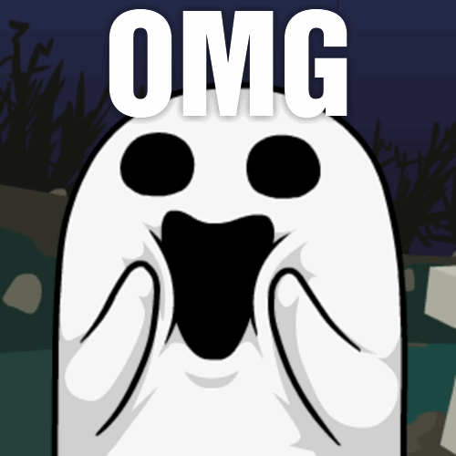
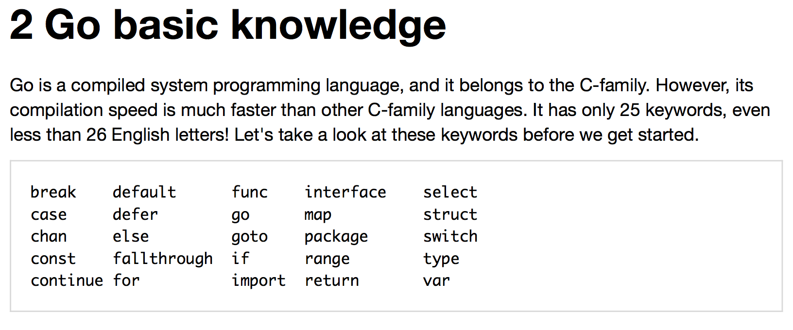
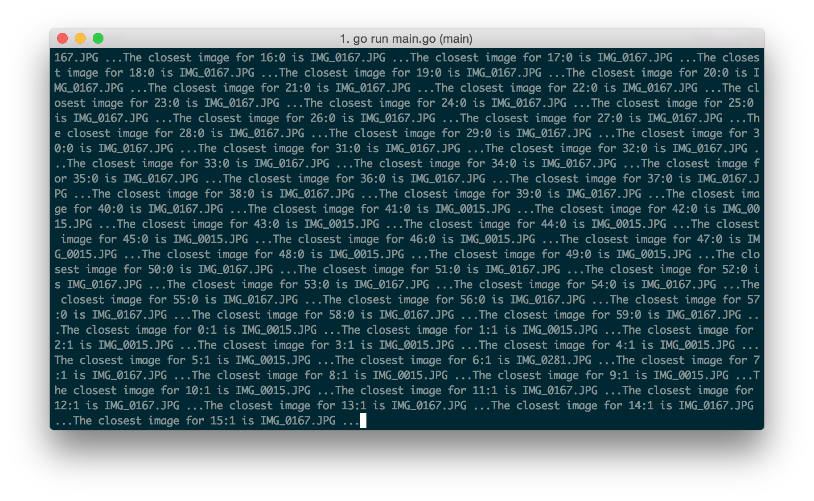
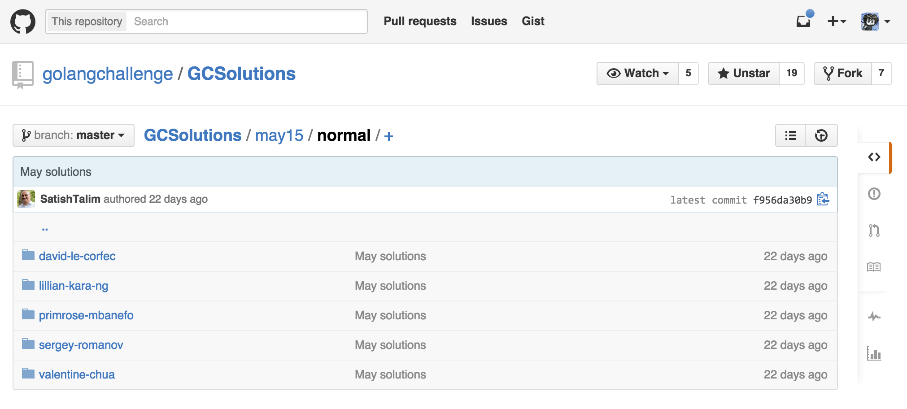
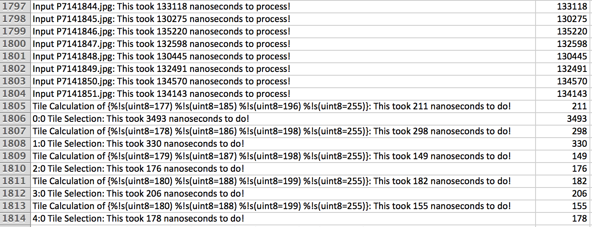
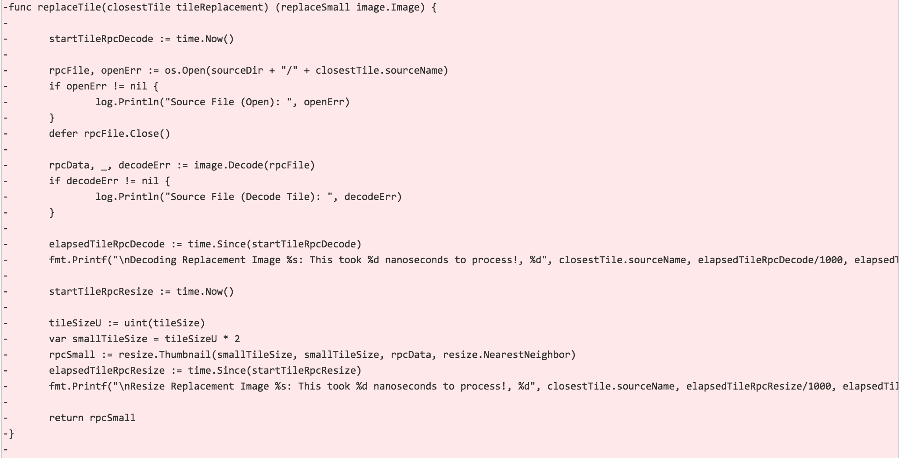

My Journey into Go
and the building of my first app, a mosaic creator
Valentine Chua • @ValentineChua

Hello!
This is the first code project I've ever shipped.
Before Go
- HTML/CSS/basic JS
- PHP (WordPress)
- Played around a bit with Ruby
What Happened When I Ran Go Install
Why You Should Learn Go

http://blog.gopheracademy.com/gophers-slack-community/
What To Do
Source images ➜ Resize ➜ Calculate average colour
⬇︎
Create lookup table
⬇︎
Divide input image into tiles of 16x16
⬇︎
Calculate the colour distance between the tiles and all the source images
⬇︎
Write source image into tile position
The Code
// Go-Mosaic -- Valentine's entry into Go Challenge 3
package main
import (
"flag"
"fmt"
"github.com/nfnt/resize"
"image"
"image/draw"
"image/jpeg"
"log"
"math"
"os"
"path/filepath"
"time"
)
var sourceDir string
var inputImage string
var outputImage string
var tileSize int
func init() {
flag.StringVar(&sourceDir, "source", "photos", "Directory for source images")
flag.StringVar(&inputImage, "input", "input.jpg", "Path of input image (used to create mosaic)")
flag.StringVar(&outputImage, "output", "output.jpg", "Path of output image")
flag.IntVar(&tileSize, "tile", 16, "Size of tiles in output image (higher numbers process faster, but images will have less resolution)") // mode for the challenge is 16
}
func checkInput(inputImage string) {
imgFile, openErr := os.Open(inputImage)
if openErr != nil {
log.Fatal("ERROR: Input file doesn't exist.\nPlease specify an input file using the input flag (e.g. -input=\"input.jpg\").")
}
defer imgFile.Close()
}
func checkOutput(outputImage string) {
_, openErr := os.Stat(outputImage)
if openErr == nil {
log.Fatalf("ERROR: There is already an image named %s.\nTry specifying a different output file name using the output flag (e.g. -output=\"output2.jpg\").", outputImage)
}
}
type colorRGBA struct {
colorR int
colorG int
colorB int
colorA int
}
type sourceFile struct {
sourceIndex int
sourceName string
sourceData image.Image
colorRGBA
}
type imageLookup struct {
sourceName string
colorRGBA
}
type imageTile struct {
imageX int
imageY int
colorRGBA
}
type tileDistance struct {
sourceName string
distance float64
}
type tileReplacement struct {
imageX int
imageY int
sourceName string
}
func calcDir() (lookup []imageLookup) {
var lookupTable []imageLookup
dirOpen, dirOpenErr := os.Open(sourceDir)
if dirOpenErr != nil {
log.Println("Directory (Open): ", dirOpenErr)
}
defer dirOpen.Close()
dirFiles, dirFilesErr := dirOpen.Readdir(-1)
if dirFilesErr != nil {
log.Println("Directory (Read Files): ", dirFilesErr)
}
for _, file := range dirFiles {
if !file.Mode().IsRegular() { // ensures no mode bits are set
fmt.Printf("Unable to access %s as mode bits are set (this usually means it's a directory)...", file.Name())
continue
}
if filepath.Ext(file.Name()) != ".JPG" && filepath.Ext(file.Name()) != ".jpg" {
fmt.Printf("Unable to process %s as it does not have a JPG extension ...", file.Name())
continue
}
imgFile, openErr := os.Open(sourceDir + "/" + file.Name())
if openErr != nil {
log.Println("Source File (Open): ", openErr)
}
imgData, imgFormat, decodeErr := image.Decode(imgFile)
if decodeErr != nil {
log.Println("Source File (Decode): ", decodeErr)
continue
}
imgFile.Close() // closes the image file, to avoid "too many open files" error
if !(imgFormat == "jpeg") { // checks if decoded format is JPEG
fmt.Printf("Unable to decode %s as it is not JPEG\n", file.Name())
continue
}
tileSizeU := uint(tileSize)
imgSmall := resize.Thumbnail(tileSizeU, tileSizeU, imgData, resize.NearestNeighbor)
imgColor := averageColor(imgSmall)
fileID := imageLookup{file.Name(), imgColor}
lookupTable = append(lookupTable, fileID)
fmt.Printf("Processing %s ... ", file.Name())
}
return lookupTable
}
func tileImage(lookup []imageLookup) {
imgFile, openErr := os.Open(inputImage)
if openErr != nil {
log.Println("Source File (Open): ", openErr)
}
defer imgFile.Close()
imgData, _, decodeErr := image.Decode(imgFile)
if decodeErr != nil {
log.Println("Source File (Decode Tile): ", decodeErr)
}
bounds := imgData.Bounds()
imgWidth := bounds.Max.X
imgHeight := bounds.Max.Y
maxTilesX := int(math.Ceil(float64(imgWidth) / float64(tileSize)))
maxTilesY := int(math.Ceil(float64(imgHeight) / float64(tileSize)))
var tileChoice []tileReplacement
newCanvas := image.NewRGBA(image.Rect(0, 0, imgWidth, imgHeight))
for tileY := 0; tileY < maxTilesY; tileY++ {
for tileX := 0; tileX < maxTilesX; tileX++ {
tileXZero := tileX * tileSize
tileYZero := tileY * tileSize
imgTile := image.NewRGBA(image.Rect(0, 0, tileSize, tileSize))
draw.Draw(imgTile, imgTile.Bounds(), imgData, image.Point{tileXZero, tileYZero}, draw.Src)
tileColor := averageColor(imgTile)
var distSlice []tileDistance
for l := 0; l < len(lookup); l++ {
colorDist := measureColorDist(tileColor.colorR, tileColor.colorG, tileColor.colorB, lookup[l].colorR, lookup[l].colorG, lookup[l].colorB)
cdSlice := tileDistance{lookup[l].sourceName, colorDist}
distSlice = append(distSlice, cdSlice)
}
min := distSlice[0].distance
idx := 0
for m := 0; m < len(distSlice); m++ {
if distSlice[m].distance < min {
min = distSlice[m].distance
idx = m
}
}
closestTile := tileReplacement{tileX, tileY, distSlice[idx].sourceName}
tileChoice = append(tileChoice, closestTile)
fmt.Printf("Now processing tile %d:%d ...", tileX, tileY)
rpcSmall := replaceTile(closestTile)
draw.Draw(newCanvas, image.Rectangle{image.Point{tileXZero, tileYZero}, image.Point{imgWidth, imgHeight}}, rpcSmall, image.Point{0, 0}, draw.Src)
}
}
writeToJPEG(newCanvas)
}
func averageColor(colorInput image.Image) (average colorRGBA) {
bounds := colorInput.Bounds()
var totalColorR, totalColorG, totalColorB, totalColorA int
for y := bounds.Min.Y; y < bounds.Max.Y; y++ {
for x := bounds.Min.X; x < bounds.Max.X; x++ {
r, g, b, a := colorInput.At(x, y).RGBA()
totalColorR += int(r)
totalColorG += int(g)
totalColorB += int(b)
totalColorA += int(a)
}
}
var imagePixels = bounds.Max.X * bounds.Max.Y
var avgColorR, avgColorG, avgColorB, avgColorA int
avgColorR = totalColorR / imagePixels
avgColorG = totalColorG / imagePixels
avgColorB = totalColorB / imagePixels
avgColorA = totalColorA / imagePixels
avgColor := colorRGBA{avgColorR, avgColorG, avgColorB, avgColorA}
return avgColor
}
func measureColorDist(tileRed int, tileGreen int, tileBlue int, poolRed int, poolGreen int, poolBlue int) (output float64) {
// Euclidean formula = sqrt((r1-r2)^2 + (g1-g2)^2 + (b1-b2)^2)
var redDist = float64(tileRed - poolRed)
var greenDist = float64(tileGreen - poolGreen)
var blueDist = float64(tileBlue - poolBlue)
var totalDist = math.Sqrt(math.Pow(redDist, 2) + math.Pow(blueDist, 2) + math.Pow(greenDist, 2))
return totalDist
}
func replaceTile(closestTile tileReplacement) (replaceSmall image.Image) {
rpcFile, openErr := os.Open(sourceDir + "/" + closestTile.sourceName)
if openErr != nil {
log.Println("Source File (Open): ", openErr)
}
defer rpcFile.Close()
rpcData, _, decodeErr := image.Decode(rpcFile)
if decodeErr != nil {
log.Println("Source File (Decode Tile): ", decodeErr)
}
tileSizeU := uint(tileSize)
var smallTileSize = tileSizeU * 2
rpcSmall := resize.Thumbnail(smallTileSize, smallTileSize, rpcData, resize.NearestNeighbor)
return rpcSmall
}
func writeToJPEG(imageData image.Image) {
out, osCreateErr := os.Create(outputImage)
if osCreateErr != nil {
log.Println("Create File (OS): ", osCreateErr)
}
defer out.Close()
var opt jpeg.Options
opt.Quality = 100
jpegErr := jpeg.Encode(out, imageData, &opt)
if jpegErr != nil {
log.Println("Create File (JPEG Encode): ", jpegErr)
}
}
func main() {
flag.Parse()
checkInput(inputImage)
checkOutput(outputImage)
start := time.Now()
lookup := calcDir()
tileImage(lookup)
elapsed := time.Since(start)
fmt.Printf("\nHurray! Your mosaic took %d minutes to create!", elapsed/60000000000)
}
"Ghetto" Debugging
fmt.Printf("Something happened: %+v", somevalue)is my best friend.
Led to CLI feedback like this:
"Ghetto" Profiling
startTileRpc := time.Now()
draw.Draw(newCanvas, image.Rectangle{image.Point{tileXZero, tileYZero}, image.Point{imgWidth, imgHeight}}, distSlice[idx].sourceData, image.Point{0, 0}, draw.Src) // code to be profiled
elapsedTileRpc := time.Since(startTileRpc)
fmt.Printf("\nReplacing Tile %d:%d: This took %d nanoseconds to process!, %d", tileX, tileY, elapsedTileRpc/1000, elapsedTileRpc/1000)
go-mosaic -input="input.jpg" -output="output.jpg" | tee gomosaic.csv
Go Challenge
Mosy's Code
for y := target.Bounds().Min.Y; y < target.Bounds().Max.Y; y++ {
for x := target.Bounds().Min.X; x < target.Bounds().Max.X; x++ {
startgenerate := time.Now()
// select the tile with the closest average color then copy it to output
c := target.At(x, y)
t := m.tiles.closest(c)
draw.Draw(dst, image.Rect(x*tw, y*th, (x+1)*tw, (y+1)*th), t.img, image.Pt(0, 0), draw.Src)
elapsedgenerate := time.Since(startgenerate)
fmt.Printf("\n%d:%d Tile Selection: This took %d nanoseconds to do!, %d", x, y, elapsedgenerate/1000, elapsedgenerate/1000)
}
}
Mosy's Profile
Removed one I/O read
From 88 mins to 158 seconds.
Thank you!
Code reviews are welcome
http://github.com/Valentine/go-mosaic
(also at: http://git.io/gomo)